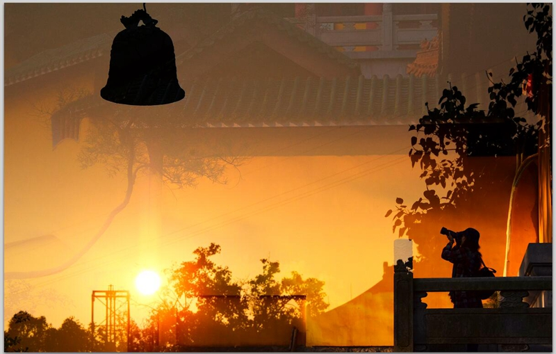

如果能有一块空地，不论窗前屋后，我想种两棵树：一棵合欢，纪念母亲；一棵海棠，纪念奶奶。奶奶和一棵老海棠树，在我的记忆里不能分开，因为奶奶一生一世都在那棵老海棠树的影子里张望。老海棠树近房高的地方，有两条粗壮的枝丫，弯曲如一把躺椅。儿时我常爬上去，一天天地在那儿玩，奶奶在树下喊：“下来吧，你就这么一天到晚待在上头?”是的，我在那儿看小人书、射弹弓，甚至写作业......
如果能有一块空地，不论窗前屋后，我想种两棵树：一棵合欢，纪念母亲；一棵海棠，纪念奶奶。奶奶和一棵老海棠树，在我的记忆里不能分开，因为奶奶一生一世都在那棵老海棠树的影子里张望。老海棠树近房高的地方，有两条粗壮的枝丫，弯曲如一把躺椅。儿时我常爬上去，一天天地在那儿玩，奶奶在树下喊：“下来吧，你就这么一天到晚待在上头?”是的，我在那儿看小人书、射弹弓，甚至写作业......

在台阶上张望那条小街的时候，我大约两岁多。我记事早。我记事早的一个标记，是斯大林的死。有一天父亲把一个黑色镜框挂在墙上，奶奶抱着我走近看，说：斯大林死了。镜框中是一个陌生的老头儿，突出的特点是胡子都集中在上唇。在奶奶的涿州口音中，“斯”读三声。我心想，既如此还有什么好说，这个“大林”当然是死的呀？我不断重复奶奶的话，把“斯”读成三声，觉得有趣，觉得别人竟然都没有发现这一点可真是奇怪......